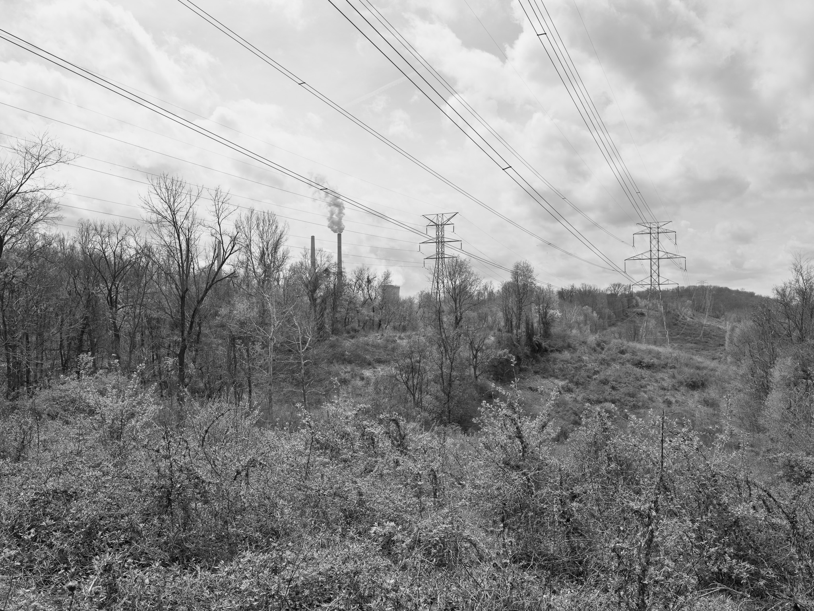
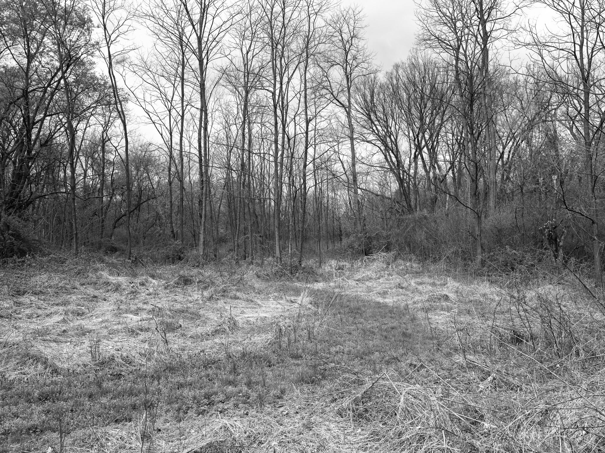
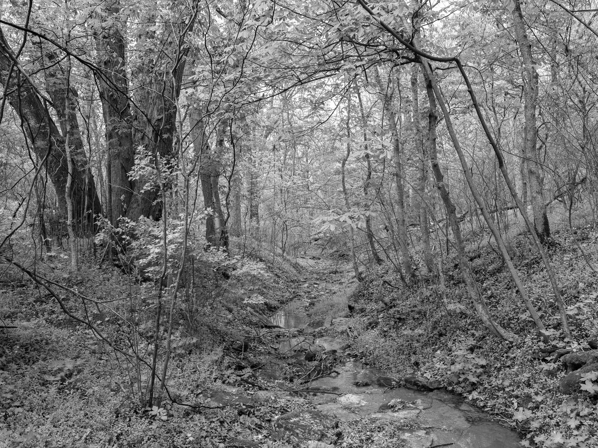
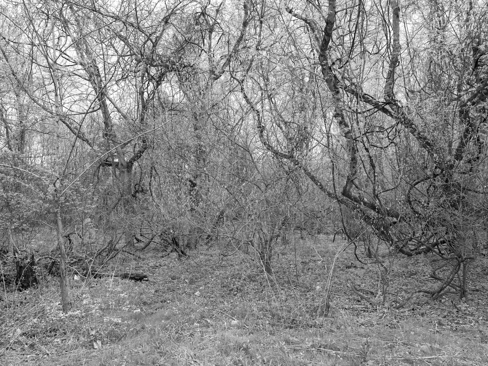
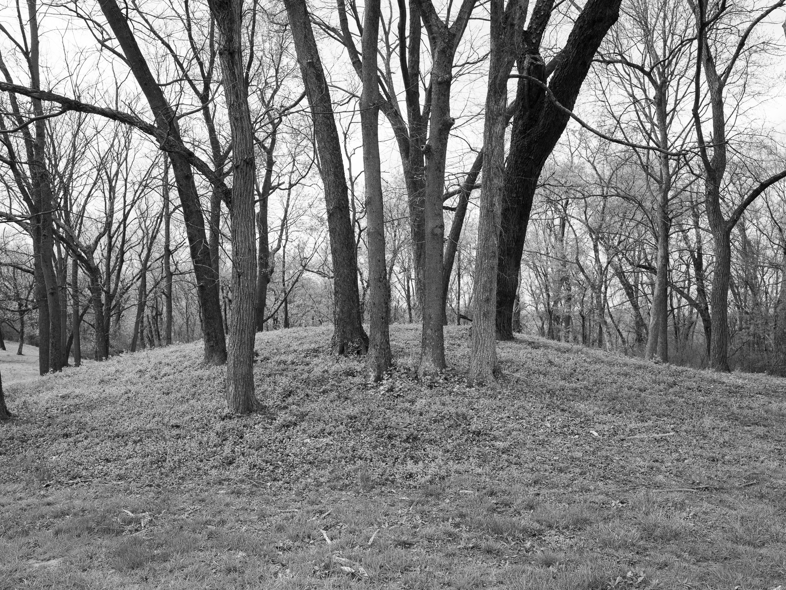

Public Lands Institute
Index
Archive
Shawnee Lookout
OH

Shawnee Lookout I · 2026-04-03
_DSF1168.jpg

Shawnee Lookout II · 2026-04-03
_DSF1174.jpg

Shawnee Lookout III · 2026-04-03
_DSF1193.jpg

Shawnee Lookout IV · 2026-04-03
_DSF1195.jpg

Shawnee Lookout V · 2026-04-03
_DSF1201.jpg
View all 5 images
← Caesar Creek State Park
Fernald Preserve →